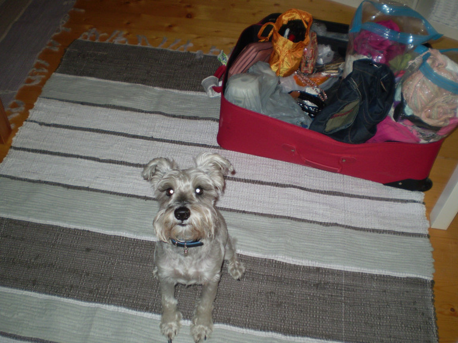

Магистр Электроэнерготехники
Краткая биография
Я — инженер электрик с опытом работы с оборудованием 220/380 и системами учета электроэнергии. Я же специалист по оптимизации работы склада: увеличение производительности труда, внедрение ноу-хау, внедрение систем управления складом, складская экспертиза. Теперь я еще и студент колледжа по специальности – инженер связи (communication engineering technology – wireless).
Фото дня
Вот подумал показывать что же такое БК, буду каждый день выкладывать по одной фотографии. Не знаю, получится ли делать это месяц, как того хочется, но на пару недель думаю моего запала хватит 🙂
Читать далее...Каждый кулик свое болото хвалит
Привет, вот я чуть более серьезно вернулся к блогу, даже не столько к самому блогу, сколько к ответам на вопросы, что вы мне присылаете по почте и возник у меня один вопрос.
Читать далее...Все посты
Краткая биография
Я — инженер электрик с опытом работы с оборудованием 220/380 и системами учета электроэнергии. Я же специалист по оптимизации работы склада: увеличение производительности труда, внедрение ноу-хау, внедрение систем управления складом, складская экспертиза. Теперь я еще и студент колледжа по специальности – инженер связи (communication engineering technology – wireless).
Стоит почитать
Привет, пока я немного сачкую, и пишу в блог довольно редко, советую вам, друзья обратить внимание на блог коллеги по счастью 🙂 simferopolbrandon.wordpress.com. Я этот начинающий блог прочитал с большим интересом, да и однозначно, уже о жизни в Брендоне вы сможете больше узнать из блога Эльдара, в то время как мне судьба, уже судя по всему уоготовила участь повествовать о Британской Колумбии.
Читать далее...Привет, друзья
Привет опять, как не странно, но я таки не забил на блог, и очень хочу продолжать …
Утром мажу бутерброд —
Сразу мысль: а как народ?
И икра не лезет в горло,
И компот не льется в рот!
Вот и у меня примерно также, помню, помню 🙂 Только, вот получается не очень, в силу чисто технических обстоятельств. Так получается, что времени писать дома у меня нет, дома жена — красавица и карапуз растет стремительно).
Читать далее...

Собака охраняка